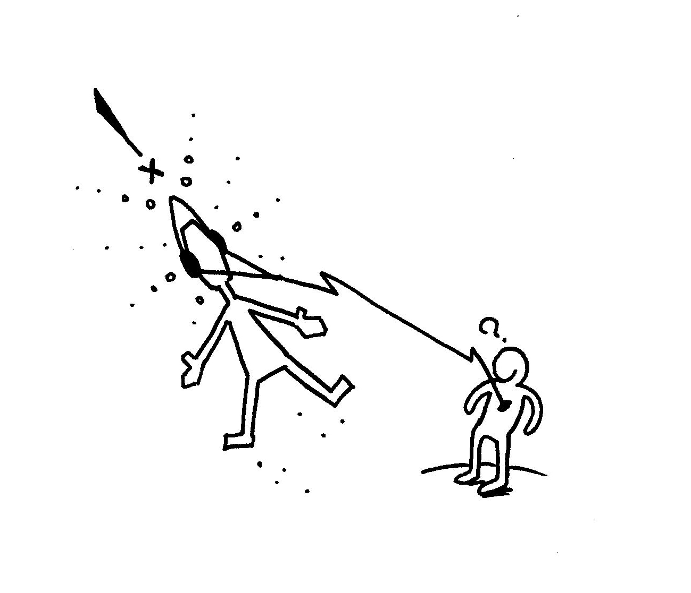
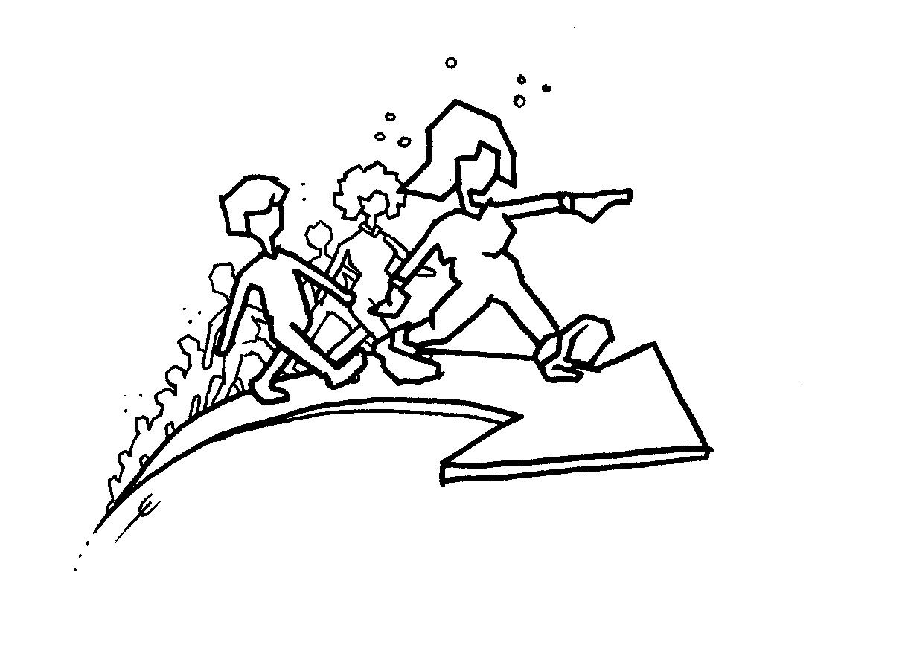

{% capture over_page %}{% include over.md %}{% endcapture %}
{% capture tools_page %}{% include tools.md %}{% endcapture %}
{% capture werkwijze_page %}{% include werkwijze.md %}{% endcapture %}

{{ over_page | markdownify }}

{{ werkwijze_page | markdownify }}
Terug naar boven